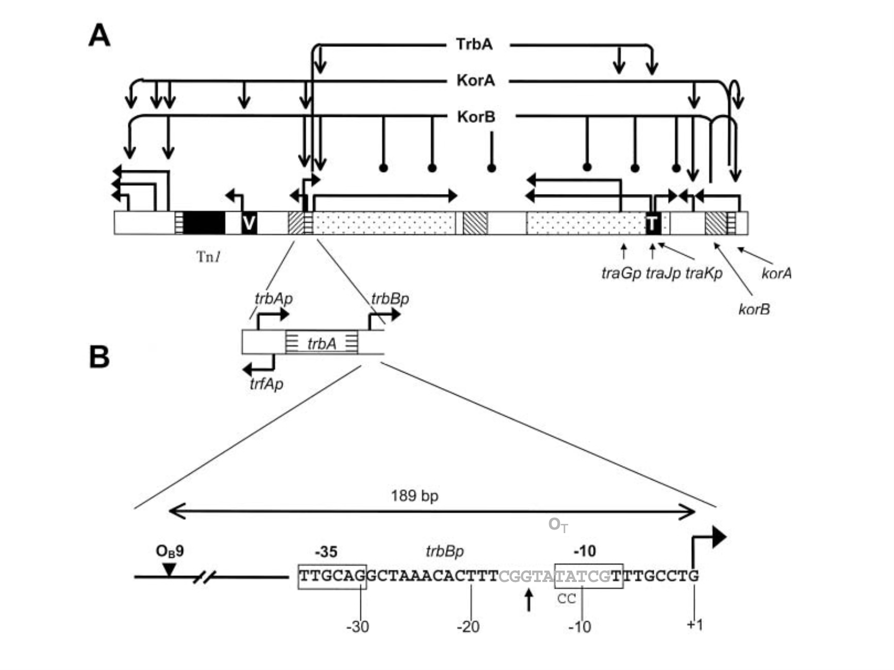
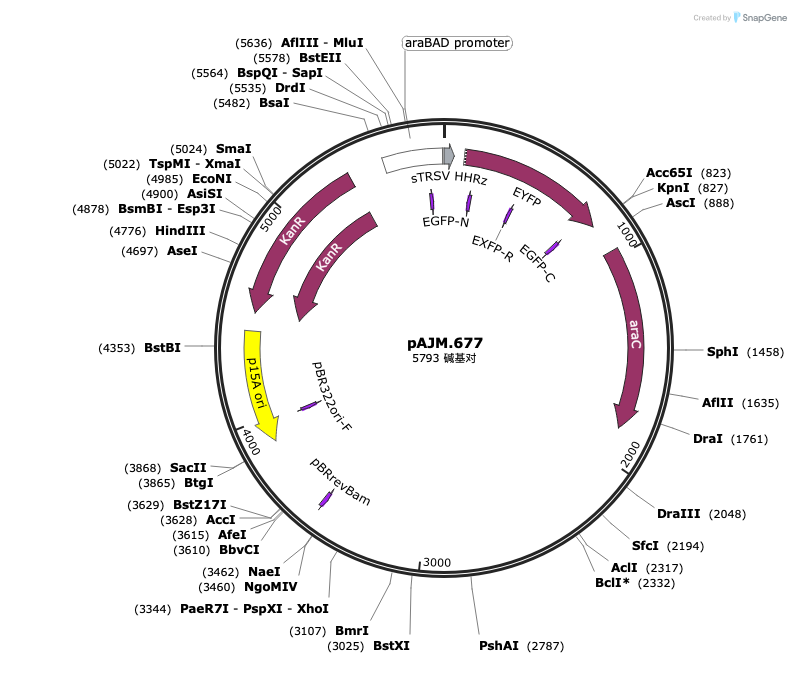
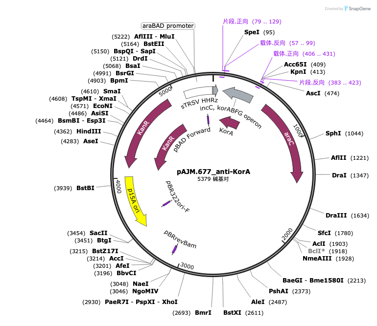
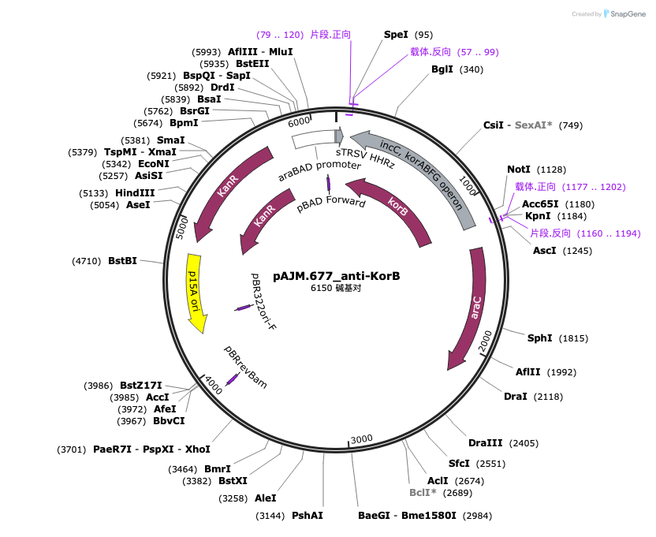
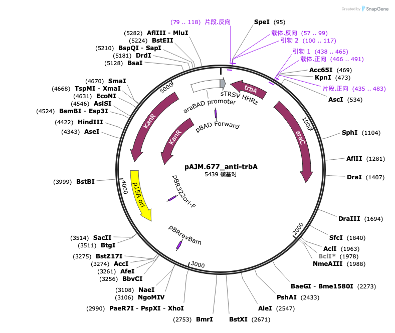
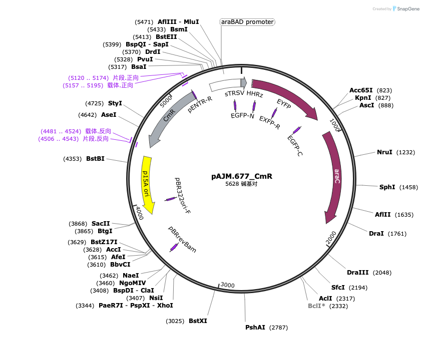
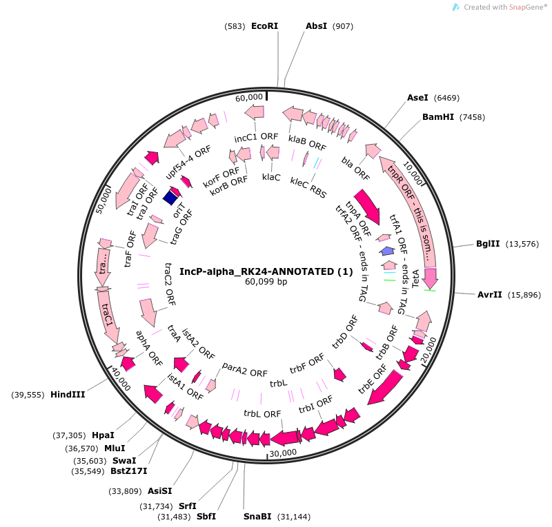

Challenge Overview: Tunable "Throttle" for Conjugation
This challenge runs independently from the main project track. We inserted antisense RNA regulators targeting KorA, KorB and TrbA into the pBAD expression cassette of pAJM.677 to regulate conjugative transfer of pRK24.
Design Goals
- ON state: High conjugation efficiency under full induction (1000 μM L-arabinose), ideally approaching the wild-type pRK24 control;
- OFF state: Extremely low conjugation efficiency under non-inducing conditions (0 μM), ideally close to zero;
- Sole input signal: L-arabinose → pBAD → expression of KorA/KorB/TrbA in pAJM.677.
Scientific Background: CAGE, pRK24 and the RK2 Regulatory Network
CAGE: Why pRK24?
Conjugative Assembly Genome Engineering (CAGE) (Ma, Moonan & Isaacs, Nature Protocols, 2014) uses bacterial conjugation for hierarchical assembly of E. coli genomes: oriT is site-specifically integrated into the donor genome (fused with a kanamycin resistance cassette, placed ≥ 3 kb upstream of the target fragment), with transfer functions supplied by a separate conjugative machinery plasmid. The transferred single-stranded donor DNA enters the recipient and is converted to double-stranded DNA, followed by recombination mediated by recBCD to form a chimeric genome. One round of CAGE takes roughly one week; four rounds complete hierarchical assembly of 16 strains (around one month).
This conjugative machinery is pRK24 (Addgene strain #51950), an IncP broad-host-range conjugative plasmid (a derivative of the RK2 / RP4 / RP1 family, lacking kanamycin resistance). pRK24 is readily lost from most cells in the absence of antibiotic selection pressure. For this reason, CAGE relies on a “selection–loss–reintroduction” cycle to rapidly switch between donor and recipient states. pRK24 naturally exhibits extremely high conjugation efficiency, and nearly half of its genome consists of transfer-related genes. This is exactly why it was selected as our regulatory target for this challenge: if we can engineer control over the “conjugation initiation rate”, we can add an inducible, programmable switch for conjugation-dependent technologies such as CAGE.
Sources: Original CAGE paper (Nat Protoc. 2014;9(10):2285–2300) and the official iDEC 2026 Challenge Guide.
RK2 Global Regulatory Network: KorA · KorB · TrbA
RK2 possesses a complex negative regulatory network centered on three global transcriptional repressors KorA, KorB, TrbA. They cooperatively coordinate gene expression for replication (TrbA operon), stable maintenance and conjugative transfer (trb operon, among others). KorB can form pairwise cooperativity with either KorA or TrbA, producing repression on the same promoter far stronger than the product of repression exerted by each protein individually. The network exhibits ultrasensitive behaviour: minor regulatory perturbations can alter conjugation frequency by multiple orders of magnitude. This property forms the scientific foundation for our wide‑dynamic‑range “switch” design.

Image slot · assets/img/challenge/rk2-network.pngFigure 2-1. Cooperative regulation of RK2 replication and conjugative transfer by KorA · KorB · TrbA(schematic from the paper, to be inserted).
① Direct KorA–KorB Interaction (Heterodimer) · Mol Microbiol 2008
- NMR demonstrates that KorA and KorB bind directly in the absence of DNA; the interaction interface is located within the C-terminal domain (CTD) of KorA;
- Each KorB dimer can interact with two KorA dimers (2 KorA : 1 KorB);
- Key residue: KorA Tyr84 (substitutable by Phe) — its deletion leaves standalone repression unchanged but completely abolishes cooperativity with KorB;
- korAp: KorA alone yields ~3-fold repression; addition of KorB produces >100-fold repression.
② Cooperative Repression of trbBp by KorB–TrbA · J Bacteriol 2001
- trbBp is the major promoter of the trb operon encoding Mpf mating-pair formation genes. KorB and TrbA still cooperate when their binding sites are ~165 bp apart;
- TrbA alone: 2.3× repression; KorB alone: 8.3× repression; together >203.5× repression, cooperativity index CI ≈ 10.7 (CI > 20 at mRNA level);
- KorB site OB9 lies 189 bp upstream of trbBp; distal binding enables strong repression (DNA looping model);
- The CTD of TrbA (highly conserved with KorA CTD) is required for cooperativity.
③ TrbA Cross-Regulates Replication and Transfer · Nucleic Acids Res 1992
- trbA encodes a 12 kDa protein (121 aa), located upstream of the trb operon;
- TrbA represses both TrbAp (vegetative replication) and kilBI/trbBp (conjugative transfer), coordinating two propagation modes: “replication” and “transfer”;
- Its N-terminal HTH motif resembles the Sin/φ105 immunity repressor of *Bacillus subtilis*; the CTD is similar to KorA (rich in basic amino acids).
④ Ultrasensitive Response: Minor Changes → Orders‑of‑Magnitude Effects · Mol Microbiol 2003
- The TrbA operator (CGGTATATCG) at trbBp is naturally submaximal; a G→A transition at position −15 converts it into a perfect palindrome CGATATATCG, enhancing TrbA‑mediated repression by approximately 41–50%;
- When this single‑base substitution was introduced into the full‑length RK2 genome, conjugative transfer frequency dropped by 50–600‑fold (mating within <1 h), and TrbB protein abundance decreased roughly 14‑fold — an effect far greater than that exerted by TrbA alone;
- The effect is amplified in the presence of KorB (co‑operativity index shifts from 11 to 32), demonstrating that KorB‑dependent co‑operativity magnifies “small perturbations” into “large phenotypic changes”;
- Conclusion: The RK2 regulatory network hovers at a critical threshold just sufficient for efficient conjugation — a natural lever enabling switch‑like designs with wide dynamic range.
Design: Candidate Regulators, Plasmid Systems and Strain Workflow
Design Hypothesis & Rationale
Our team hypothesizes: The native conjugation efficiency of pRK24 is governed by KorA / KorB / TrbA. Inducible expression of these regulators (or their combinations) via pBAD enables systematic perturbation of trb operon expression across an arabinose gradient, yielding a predictable dose‑response of conjugation efficiency. Candidate designs will be benchmarked against one another using the challenge scoring metrics (RON, LOFF, F, Qrobust, S).
Design rationale: Expression of protein repressors (e.g. TrbA/KorB/KorA) increases under pBAD induction → transfer genes become more strongly repressed. To achieve the desired challenge polarity (induction → higher conjugation), we adopt RNA‑based antisense regulation as our derepression strategy.
Candidate Regulator Matrix (from literature mining)
| Candidate | Regulatory Mechanism | Literature Support (Key Data) | Predicted Effect on CE | Status |
|---|---|---|---|---|
| TrbA（protein） | Represses trbBp / TrbAp / tra promoters | NAR 1992; 2.3× repression of trbBp alone | Induction → ↓trb expression → ↓CE (baseline-sensitive) | Constructed |
| KorB（protein） | 12 OB sites; distal repression of trbBp (OB9) | JB 2001; 8.3× repression when acting alone | Induction → ↓CE (strongest among single regulators) | Constructed |
| KorA (Protein) | Represses korAp / TrbAp; cooperates with KorB | MM 2008; ~3× alone, >100× when combined with KorB | Induction → ↓CE; cooperative amplification effect | Constructed |
Plasmid Systems & Engineering Specifications
Three variants of pAJM.677
- Wild-type pAJM.677: carries YFP expression cassette, serving as arabinose-inducible fluorescence control (to measure pBAD output);
- Kanamycin-resistant engineered pAJM.677–KorA/KorB/TrbA: donor-side regulatory plasmid; YFP coding region replaced with antisense RNA (KorA/KorB/TrbA);
- Chloramphenicol-resistant pAJM.677 derivative: kan resistance gene replaced by chl resistance gene, used for recipient cells and post-conjugation screening.
Wild-type pRK24

+
+
+
+
+
+Donor / Recipient Strain Design (Four Donors + One Recipient)
| Strain | Plasmids Carried | Maintenance Antibiotics | Primary Purpose |
|---|---|---|---|
| Donor 1 | Wild‑type pRK24 + wild‑type pAJM.677‑YFP | Tet 10 μg/mL + Kan 50 μg/mL | Wild‑type pRK24 conjugation control + YFP induction control |
| Donor 2 | Wild‑type pRK24 variant + kanamycin‑resistant pAJM.677‑KorA | Tet 10 μg/mL + Kan 50 μg/mL | pRK24 engineering‑effect control / regulator quantitative analysis |
| Donor 3 | Wild‑type pRK24 variant + kanamycin‑resistant pAJM.677‑KorB | Tet 10 μg/mL + Kan 50 μg/mL | Primary engineered challenge system / no‑fluorescence control |
| Donor 4 | Wild‑type pRK24 variant + kanamycin‑resistant pAJM.677‑TrbA/td | Tet 10 μg/mL + Kan 50 μg/mL | Primary engineered challenge system / no‑fluorescence control |
| Recipient | Chloramphenicol‑resistant pAJM.677 derivative | Chl 25 μg/mL | Recipient cell; Chl‑based selection of transconjugants after conjugation |
Standardized Experimental Protocols (Following iDEC 2026 Official Guidelines)
Day 1: Overnight Culture Preparation
| Item | Donor Strain | Recipient Strain |
|---|---|---|
| Inoculation | Pick single colony, 200 μL LB + Tet 10 μg/mL + Kan 50 μg/mL (96-well plate) | Pick single colony, 200 μL LB + Chl 25 μg/mL (96-well plate) |
| Strain Profile | ① Wild-type pRK24 + wild-type pAJM.677-YFP; ② Wild-type pRK24 + pAJM.677-KorA; ③ Wild-type pRK24 + pAJM.677-KorB; ④ Wild-type pRK24 + pAJM.677-TrbA | pAJM.677 derivative with chloramphenicol resistance |
| Culture Condition | 37 ℃ · 800–1000 rpm shaking · 16–20 h | |
Day 2: 6-hour Induction & Sample Preparation
| Step | Operation | Key Parameters / Reporting Items |
|---|---|---|
| Donor Induction | Deep-well 96-well plate: 990 μL fresh LB + Tet 10 μg/mL + Kan 50 μg/mL + L-arabinose, inoculate with 10 μL overnight culture | Final volume 1 mL · 1:100 dilution · L-arabinose 0 / 0.1 / 1 / 10 / 100 / 1000 μM · 37 ℃ for 6 h |
| Recipient Preparation | 990 μL fresh LB + Chl 25 μg/mL, inoculate with 10 μL overnight culture | Incubate for 6 h synchronously with donors; no arabinose; no fluorescence measurement |
| PBS Resuspension | Centrifuge and discard supernatant, gently resuspend pellet in 1 mL sterile PBS | Resuspend donors and recipients separately; retain leftover suspension for conjugation |
| Plate Reading | 200 μL resuspension transferred to black clear-bottom 96-well plate (3 PBS blank wells) | OD₆₀₀ + YFP fluorescence; report raw OD₆₀₀ / raw fluorescence / background-subtracted fluorescence / OD₆₀₀-normalized fluorescence / arabinose concentration / biological replicate ID / plate model / excitation & emission wavelength / gain |
| Filter Conjugation | Performed following the standardized “Conjugation on filters” protocol on protocols.io | Non-selective LB agar plates opened to air-dry for 2 h (humidity-dependent); 0.2 μm sterile cellulose acetate membrane placed on agar surface; report membrane material / pore size / diameter / vendor / catalog number / underlying agar |
| Donor‑Recipient Mixing | OD₆₀₀ measured with 1 cm pathlength standard spectrophotometer; 0.5 mL of OD₆₀₀ = 1 culture from each side (Volume = 0.5/OD₆₀₀ mL), mixed at 1:1 ratio → centrifuge → resuspend in 10–15 μL PBS | Example: OD₆₀₀=1.0 → take 0.5 mL; OD₆₀₀=2.0 → take 0.25 mL; OD₆₀₀=0.5 → take 1.0 mL. Plate reader readings must be calibrated to 1 cm pathlength before use |
| Membrane Spotting & Incubation | Spot all 10–15 μL suspension onto the center of filter, allow slight drying then close the plate lid | Incubate at 37 ℃ for 1 h; report incubation temperature and exact conjugation duration |
| Post-conjugation Recovery | Transfer filter into sterile tube → add 1 mL sterile PBS → vigorously vortex to elute bacteria | Recovered suspension for serial dilution and plating |
| Dilution & Spot Plating | Prepare 5-fold serial dilution series for each recovered mixture, spot on two types of selective agar plates | Donor enumeration: LB + Tet 10 μg/mL + Kan 50 μg/mL; Transconjugant enumeration: LB + Tet 10 μg/mL + Chl 25 μg/mL (Chl selects for pAJM.677, Tet selects for pRK24) |
Day 3: Colony Counting and Conjugation Efficiency Calculation
After overnight incubation of selective plates, countable spots at appropriate dilutions are selected for colony counting. Record the following for each L-arabinose concentration and each biological replicate:
- Raw colony counts on Tet+Kan plates, raw colony counts on Tet+Chl plates, and dilution factor;
- Calculated Tet+Kan CFU and Tet+Chl CFU.
One independent conjugation‑efficiency value is calculated for every combination of L‑arabinose concentration and biological replicate.
7 Required Control Experiments
All controls serve to verify that observed changes in measured conjugation efficiency are not primarily caused by toxicity, growth defects, contamination, altered antibiotic resistance, plasmid loss, or selection artifacts.
| # | Control | Purpose |
|---|---|---|
| 1 | Wild‑type pRK24 + wild‑type pAJM.677 fluorescence induction control | Confirm pBAD expression output varies across the L‑arabinose gradient |
| 2 | Wild‑type pRK24 conjugation control | Establish baseline wild‑type conjugation efficiency (denominator for scoring) |
| 3 | Donor‑only control (0.5 mL, OD₆₀₀=1) plated on Tet+Chl | Rule out growth of donors alone on double‑antibiotic plates |
| 4 | Recipient‑only control (0.5 mL, OD₆₀₀=1) plated on Tet+Chl | Rule out recipient background growth on double‑antibiotic plates |
| 5 | Selection validation: donors grow on Tet+Kan plates | Validate donor selection efficiency |
| 6 | Selection validation: recipients grow on Chl plates | Validate recipient selection efficiency |
| 7 | Selection validation: pure recipients cannot grow on Tet+Chl plates | Confirm selectivity for transconjugant counting |
3 Required Figures (Error bars = standard deviation, ≥ 3 biological replicates)
Below is the standard framework placeholder for figures (example structure, not real data). Replace with measured experimental data upon assay completion.
Figure 1 · pBAD Induction and Conjugation Efficiency Response
Line plot: Relationship between YFP fluorescence of wild‑type pAJM.677 and conjugation efficiency of the engineered system across the same L‑arabinose gradient (0 / 0.1 / 1 / 10 / 100 / 1000 μM). X‑axis: L‑arabinose concentration; Y‑axis: normalized YFP fluorescence + normalized conjugation efficiency (dual Y‑axes, or each normalized to its own maximum).
Figure 2 · Fully Induced Conjugation Efficiency Comparison
Bar chart: Conjugation efficiency of wild‑type pRK24 control vs engineered system under 1000 μM L‑arabinose; Y‑axis: CE = CFU(Tet+Chl) / CFU(Tet+Kan). Used to verify whether wild‑type conjugation capacity is retained under full induction.
Figure 3 · pRK24 Plasmid Maintenance Comparison
Bar chart: Tetᵣ CFU of four groups (or normalized plasmid retention rate) after 48 h serial passaging. Parallel plating on antibiotic‑free LB plates is recommended to calculate standardized retention rate.
Standardized Scoring Metrics and Summary Table
① ON-state Retention Ratio RON
Measures the ability of the engineered system to retain wild-type conjugation efficiency under full induction; capped at 1.0 for scoring (values >1 are counted as 1.0).
② OFF-state Leakage LOFF
Residual conjugation efficiency under non-inducing conditions. If LOFF > 1, (1 − LOFF) is treated as 0 for scoring.
③ Induction Fold Change F
Report “below limit of detection” when no transconjugant colonies are observed at 0 μM; use the measured limit of detection as the denominator. Scoring cap: Fscoring = min(F, 10000). Raw measured values should still be fully reported.
④ Robustness Coefficient Qrobust
CVavg is the average coefficient of variation of conjugation efficiency across biological replicates for all required L-arabinose gradients; smaller CV yields Q closer to 1.
⑤ Composite Performance Score S
All conjugation efficiencies shall be reported as mean ± standard deviation (≥3 independent biological replicates).
Required Scoring Summary Table (Template)
| Metric | Symbol / Definition | Value (mean ± SD, n ≥ 3) | Notes |
|---|---|---|---|
| Wild‑type pRK24 Conjugation Efficiency | CEoriginal pRK24 | TBD | Baseline denominator for scoring |
| Conjugation Efficiency at 0 μM | CEengineered, 0μM | TBD | Note if below limit of detection |
| Conjugation Efficiency at 1000 μM | CEengineered, 1000μM | TBD | Fully induced state |
| ON-state Retention Ratio | RON (capped at 1.0) | TBD | CEeng,1000/CEorig |
| OFF-state Leakage | LOFF | TBD | CEeng,0/CEorig |
| Induction Fold Change | F (capped at 10000) | TBD | Use limit of detection as denominator if below detection |
| Average Coefficient of Variation | CVavg | TBD | Across all gradients |
| Robustness Coefficient | Qrobust | TBD | 1/(1+CVavg) |
| Composite Performance Score | S | TBD | RON²·log₁₀(F+1)·(1−LOFF)²·Q |
Attribution Record
| Item | Member / Lead |
|---|---|
| Construct design | Zhuochen Wang |
| Experimental execution | Zhuochen Wang, Hengxuan Zhu |
| Dataset generation | Zhuochen Wang, Hengxuan Zhu, Xingzhao Zhu |
| Data analysis | Zhuochen Wang, Hengxuan Zhu |
| Interpretation / Reporting | Zhuochen Wang, Hengxuan Zhu, Xingzhao Zhu |
References
- iDEC 2026 Challenge Experimental Guidelines: Engineering Control of pRK24 Conjugation Efficiency.
- Ma NJ, Moonan DW, Isaacs FJ. Precise manipulation of bacterial chromosomes by conjugative assembly genome engineering. Nat Protoc. 2014;9(10):2285-2300. doi:10.1038/nprot.2014.081.
- Bingle LEH, Rajasekar KV, Muntaha S, Nadella V, Hyde EI, Thomas CM. A single aromatic residue in transcriptional repressor protein KorA is critical for cooperativity with its co-regulator KorB. Mol Microbiol. 2008;70(6):1502-1514. doi:10.1111/j.1365-2958.2008.06498.x.
- Zatyka M, Bingle L, Jones AC, Thomas CM. Cooperativity between KorB and TrbA repressors of broad-host-range plasmid RK2. J Bacteriol. 2001;183(3):1022-1031. doi:10.1128/JB.183.3.1022-1031.2001.
- Jagura-Burdzy G, Khanim F, Smith CA, Thomas CM. Crosstalk between plasmid vegetative replication and conjugative transfer: repression of the TrbA operon by trbA of broad host range plasmid RK2. Nucleic Acids Res. 1992;20(15):3939-3944. doi:10.1093/nar/20.15.3939.
- Bingle LEH, Zatyka M, Manzoor SE, Thomas CM. Co-operative interactions control conjugative transfer of broad host-range plasmid RK2: full effect of minor changes in TrbA operator depends on KorB. Mol Microbiol. 2003;49(4):1095-1108. doi:10.1046/j.1365-2958.2003.03620.x.
Acknowledgements
- Supervisor Prof. Yin Han: provided key guidance and feedback on the research questions and methodology for this challenge project.
- Lab head Prof. Zizhong Qi: provided the experimental platform and research resources for this challenge project.
- Dr. Xiyan Wang: kindly donated the pRK24 plasmid, which was essential for our bacterial conjugation experiments.
- All iDEC challenge team members: for overcoming every experimental milestone together.
- College of Marine Life Sciences, Ocean University of China: provided experimental facilities and reagents, and supported us throughout this research.